Isobar
A desktop companion for Cumulus MX weather stations. It reads your station, keeps its own copy of everything, and turns years of numbers into charts you'll actually look at.
Cumulus MX is brilliant at collecting weather. It's less brilliant at showing you what it all means. Isobar sits on your desktop, asks MX for everything it knows, and lays it out on graph paper like the recording instruments weather stations used to have, the ones with a pen scratching a violet line across a drum.
It's one program, with nothing else to install. It never changes anything on your station: it only reads. Delete Isobar tomorrow and your Cumulus setup won't notice.
Search with the box at the top. Click any screenshot to see it full size (arrow keys step through them). The numbered pins on the Now screenshot explain each part. Everything here comes from the demo station, so if the numbers look suspiciously pleasant, that's why.
Getting Isobar
Builds live on the GitHub Releases page of TimsterAudio/Isobar. Latest build is rebuilt every time something changes; numbered releases appear when there's a tag.
| System | File | What to do |
|---|---|---|
| Windows 10 or 11 | isobar-windows-x64.exe | Put it anywhere (Desktop, Documents, a USB stick) and double-click it. |
| Linux (x86-64) | isobar-linux-x64.tar.gz | tar xzf isobar-linux-x64.tar.gz, then ./isobar. |
That's the whole installation. No installer, no runtime, no "please also install this other thing first".
Each release also has isobar-user-guide.zip: this guide, to keep on your own computer. Unzip it and open guide/index.html.
Windows being suspicious
Isobar isn't code-signed (signing certificates cost real money every year), so Windows treats it like a stranger at the door.
- SmartScreen may say "Windows protected your PC". Choose More info, then Run anyway. It only asks the first time.
- Defender has, once, quarantined a build as
Win32/Bearfoos.B!ml. The!mlmeans a machine-learning guess, not a known virus. VirusTotal had 1 hit out of 71. Since then the .exe carries proper file details and a standard Windows manifest, which has kept Defender calm.
Each release includes SHA256SUMS.txt. Compare it with your copy:
Windows (PowerShell): Get-FileHash .\isobar-windows-x64.exe
Linux: sha256sum -c SHA256SUMS.txt --ignore-missing
If the numbers match, the file is exactly what GitHub built from the published source.
Try it without a station
The first time Isobar opens, choose Try the demo station (or start it as isobar --demo). You get about eight years of made-up weather near Sydney, two tanks, a three-day gap to find on Health, and a station alarm that's always going off. Nothing about your real setup is saved or touched, and anything you change in the demo is forgotten when you close it.
Connecting your station
- Open Settings.
- Enter your Cumulus MX address, for example
http://192.168.1.20:8998. It's the same address you type into a browser for the MX dashboard. Port 8998 is the MX default. - If you've put a username and password on the MX interface, fill those in too.
- Press Test connection. You should see something like "Connected. 15.8 °C, 1018.5 hPa, 60% humidity."
- Press Save settings at the bottom. Nothing sticks until you do.
Then Isobar gets busy in the background:
- Live readings start straight away, every 10 seconds unless you change Check every.
- Daily history (MX's dayfile, one line per day) downloads in pages. The status at the bottom of the left rail shows "Syncing 1,200 of 3,151 days". On a typical home network it takes seconds.
- Recent detail (MX's last three days of one-minute graph data) fills the 24-hour charts so they aren't empty on the first day.
- Detailed history (MX's monthly log files) trickles in a month at a time, newest first. With many years of logs this can take a while; Health shows how far it's got. You can carry on using Isobar meanwhile.
Isobar treats Cumulus MX as the single source of truth and itself as a well-organised cache. Anything Isobar stores, it can fetch again from MX. That's why it's safe to delete its database, and why two computers can both run Isobar against the same station.
No MX on the network? Point Dayfile on this computer (Settings → History) at a dayfile.txt instead, for example in a shared folder. Isobar reads it and re-reads it whenever it changes. You won't get live readings, alarms or the rain gauge that way, but History, Compare, Insights, Seasons and Tanks all work.
Finding your way around
The rail on the left lists the screens. At its foot, a status line tells you how things are going:
| It says | Meaning |
|---|---|
| ● Live, 5 s ago | All good. The number is the age of the last reading. |
| ● Syncing 1,200 of 3,151 days | Daily history is downloading. |
| ● Station stopped sending | MX is answering, but says it isn't getting readings from the station. |
| ● Reading a dayfile | No station address, working from a local dayfile.txt. |
| ● Can't reach station | MX isn't answering. Now says why. |
A small amber dot beside Health means something there wants a look: MX has gone quiet, MX says the station has stopped sending data, or an MX alarm has gone off. Routine notices like "a Cumulus update is available" don't count.
Folding the rail away
Press « beside the Isobar name and the rail folds to a thin strip, giving the charts the whole window. Point at the strip and the rail slides out over the screen; press the pin to keep it open again. Isobar remembers which you prefer.
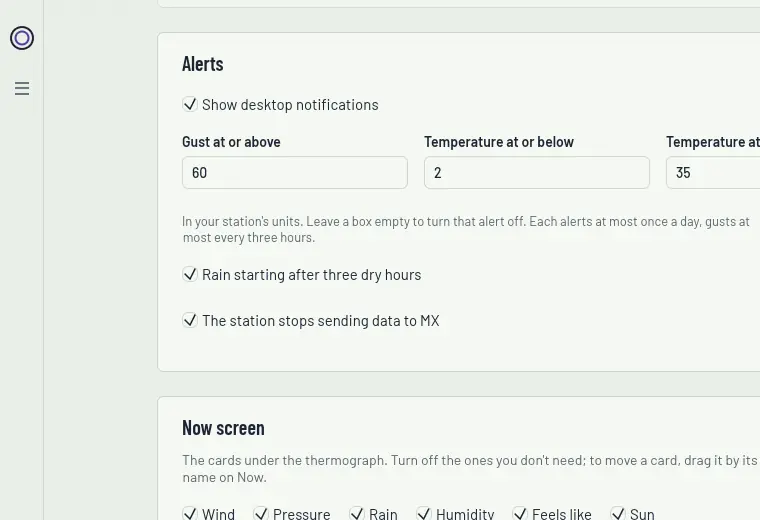
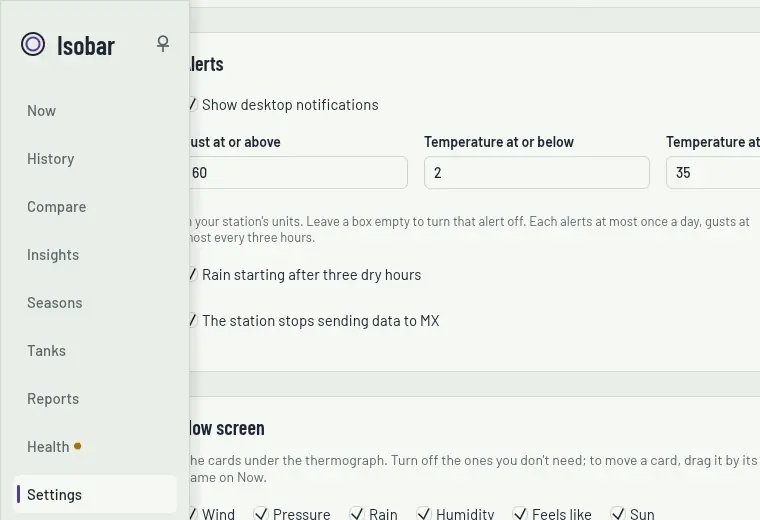
Light and dark
Settings → Appearance → Theme: Match system, Light or Dark. Light is pale green-grey chart paper with slate ink; dark is the same instrument after hours. The violet "pen" colour is kept for the main recorded line on each chart, so your eye knows where to land.
Now Screen
What's happening outside right now, and over the last day. It's the screen to leave open on a spare monitor.
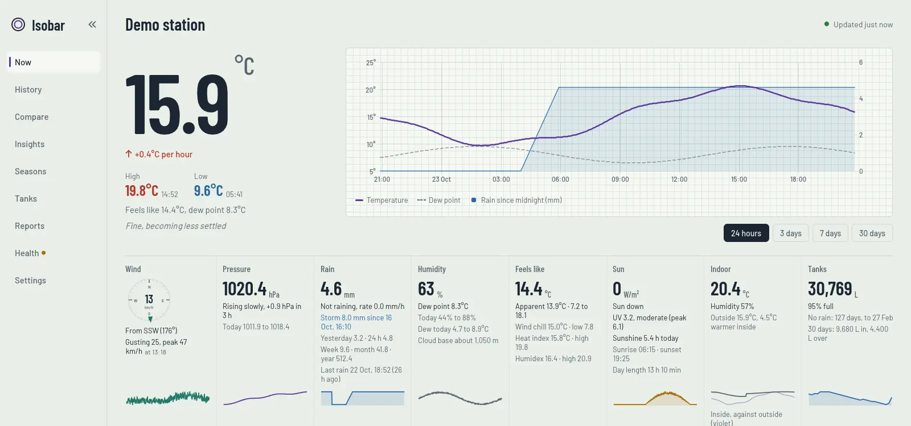
The big reading
The temperature, large enough to read from across the room. Under it:
- Trend: how fast it's changing per hour, with a red up-arrow or a blue down-arrow. Grey means steady (under 0.05° an hour).
- High and Low since the station's day began, with the times they happened.
- Feels like and dew point. Dew point is the honest measure of how muggy it is: humidity changes with temperature, dew point doesn't.
- MX's own forecast line in italics, when it sends one. Treat it with the scepticism you'd give any barometer-based forecast.
The thermograph
The one loud thing on the screen: the last 24 hours on graph paper. Temperature is the violet pen, dew point the dashed grey line. When it has rained since midnight, a blue line with a fill shows the running total on its own scale at the right. It starts again at midnight, even if your station's rain day starts at 9 am.
Isobar records one reading a minute. A stretch of over 20 minutes with nothing (Isobar closed, laptop asleep, station offline) shows as a gap rather than a misleading straight line. When Isobar starts, and after any gap over 15 minutes, it asks MX for its recent detail and fills the hole.
The cards
Under the thermograph sits a row of instrument cards, each with a 24-hour sparkline along the bottom. With all eight on, they share one row on a wide window and split into two rows of four on a narrower one.
| Card | Shows |
|---|---|
| Wind | A dial with the speed and the direction it's coming from, the latest gust and today's peak gust with its time. In light air (under about 3 km/h) the dial uses MX's 10-minute average direction, because the latest one swings about like a weathervane in a teacup. The text then says "Calm" or "Light". |
| Pressure | The reading, the three-hour tendency in forecasters' words ("Falling slowly, −0.5 hPa in 3 h") and today's range. A fall of 3.6 hPa or more in three hours turns amber: often wind and rain on the way. See the maths for the words. |
| Rain | Today's total and the rate ("Raining, 4.2 mm/h", or "Not raining"). Then the current storm and when it started, yesterday, the last 24 hours, week, month and year, and when it last rained. |
| Humidity | Relative humidity and dew point, today's humidity range and today's dew point range (hover for the times), and MX's cloud base: roughly where cumulus would form, worked out from the gap between temperature and dew point (about 125 m for each degree). |
| Feels like | MX's feels-like temperature, then a line each for the apparent temperature (the Australian measure, with today's range), wind chill (with today's low), heat index and humidex (each with today's high). Hover a line for what it means and when the extreme happened. Heat index and humidex only part company with the thermometer once it's warm and humid, so on a cool day they sit quietly at the temperature. |
| Sun | Solar radiation in W/m², plus a cloudiness gauge: sunshine now against what a clear sky would give at this time of day (Clear 85%+, Hazy 60%+, Cloudy 30%+, otherwise Overcast). UV with its band, sunshine hours today, sunrise, sunset and day length. Hover the sunrise line for moonrise and moonset. |
| Indoor | Inside temperature and humidity, how much warmer or cooler it is than outside, and a sparkline of inside against outside (violet). Only appears if your station reports indoor readings. |
| Tanks | Litres in the tanks, how full, how many days the water lasts with no rain, and the last 30 days caught and overflowed. Appears once tanks are set up. |
Rearrange them: drag a card by its name. Hide some: Settings → Now screen. Isobar remembers both.
Any card in the big chart
Click a card and the thermograph shows that measure instead, over a span that suits it. A violet line on top of the card marks the one on show. Chips under the chart change the span; Temperature, or clicking the card again, goes back.
| Card | Starts at | Spans offered | Drawn as |
|---|---|---|---|
| Temperature | 24 hours | 24 h, 3, 7, 30 days | Temperature and dew point |
| Pressure | 3 days | 24 h, 3, 7, 30 days | Pressure (a front shows up as a long slope) |
| Rain | 7 days | 24 h, 7, 30 days, 3 months | Bars of daily totals; 24 h shows the running total and the rate |
| Tanks | 3 months | 30 days, 3 months, 1 year | Tank level against capacity |
| Wind, Humidity, Feels like, Sun, Indoor | 24 hours | 24 h, 3, 7 days | Average and gust; humidity; feels like against the temperature; solar against clear-sky; inside against outside |
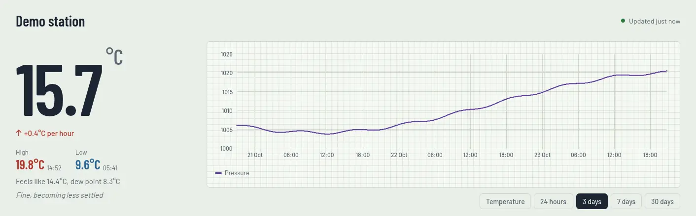
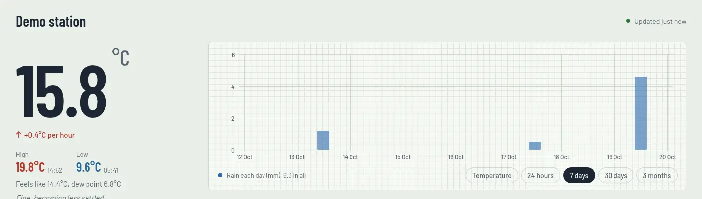
Longer spans come from MX's detailed logs. Until Isobar has fetched those, it shows daily highs and lows from the dayfile instead and says so under the chart.
When things go quiet
Top right says "Updated 5 s ago" in green. If no reading has arrived for two minutes it turns amber; if MX stops answering it turns red with "Offline" and the reason. If MX is still answering but says the station itself has gone quiet (its "data stopped" flag), it says Station stopped sending in amber, and a desktop alert goes off once. That one usually means the console, its cable or its radio link wants a look, or a fresh set of batteries. If MX can't be reached at all, Now tells you what went wrong and offers to open Settings. Usually the address is wrong, MX isn't running, or the computer running MX has gone to sleep.
History Screen
Any stretch of your station's past, set against what's normal for those dates.
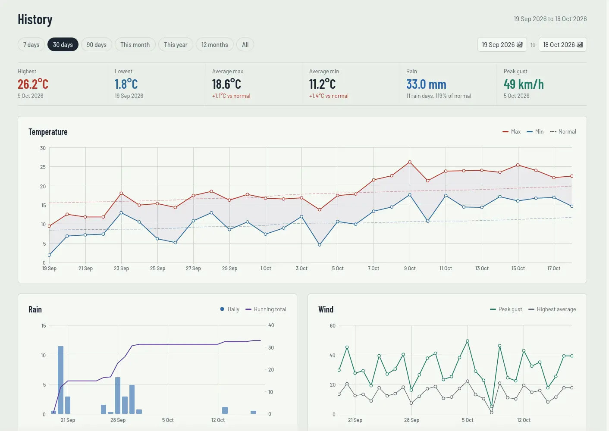
Choosing a range
Presets: 7, 30 or 90 days, this month, this year, 12 months, or all. Or pick dates with the two date boxes at the top right. Drag across any chart to zoom into that stretch; double-click to zoom back out. Hover to read values.
The summary strip
Highest, lowest, average max, average min, rain and peak gust for the range. Each has its date or its difference from normal ("+1.1°C vs normal", "11 rain days, 119% of normal").
The charts
- Temperature: a shaded band from each day's min to its max, with the normals dashed.
- Rain: daily bars and a violet running total on the right-hand scale.
- Wind: peak gust and the day's highest average.
- Pressure range: each day's high and low.
Long ranges would turn into a solid smear, so Isobar switches to weekly values beyond about 200 days and monthly values beyond three years. Temperatures and wind then show the week's or month's extremes, and rain shows totals.
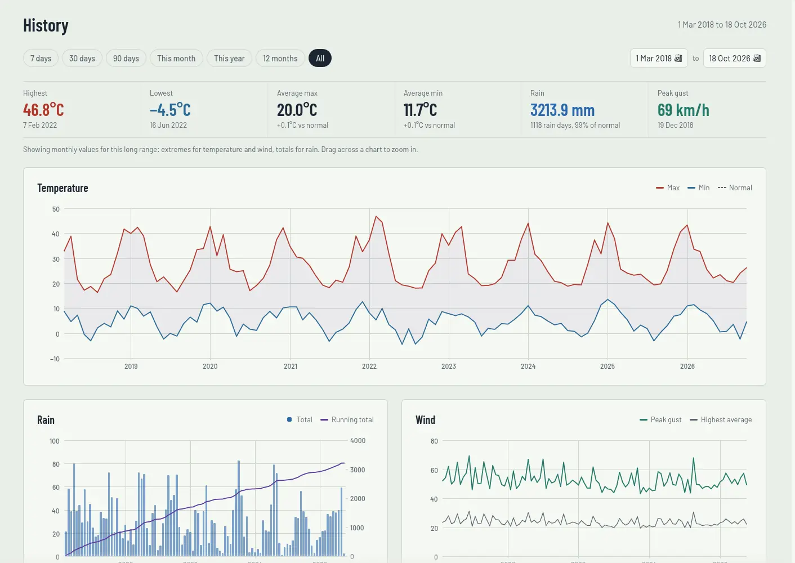
Year at a glance
A heatmap with a square for every day of a year: red warmer than normal, blue colder, or blue shades for rainfall. Choose the measure (max or min temperature against normal, or rainfall) and the year. Hover a square for the day's figures. It's the quickest way to spot a heatwave or a wet month.
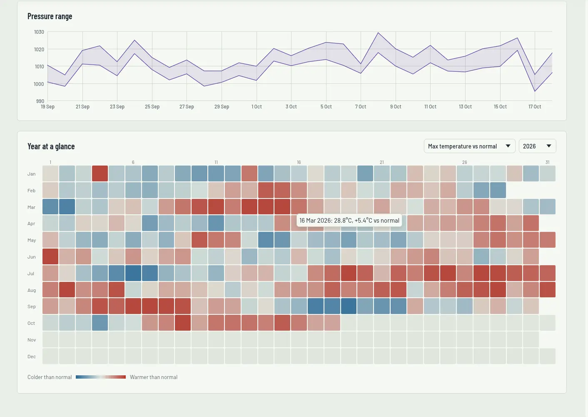
Compare Screen
Settles arguments like "it's the wettest October we've ever had" (it usually isn't).
Across years
Pick a month (or the whole year) and a measure: daily maximum, daily minimum, rain as a running total, or peak gust. Every year on record is drawn in faint grey, their average dashed, and the year you highlight in violet. Hover for the values on any day.
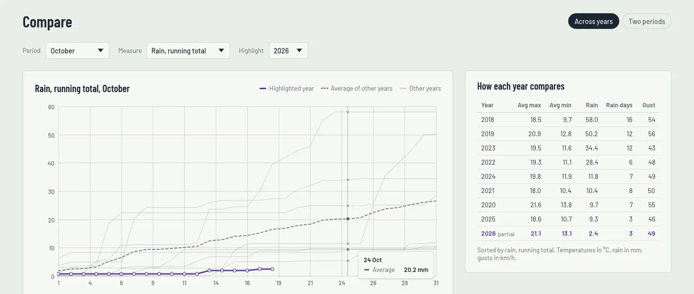
Beside it, How each year compares ranks the years by the chosen measure: average max and min, rain, rain days and peak gust. The current year is marked "partial" until it's over.
Two periods
Any two date ranges side by side, A and B. Shortcuts cover the usual questions: this month against the same month last year, this year against last year to date, and the last 30 days against the 30 before. The table gives averages, extremes, rain, rain days, peak gust and how many days had data, with B − A in the last column. Two wind roses show where the wind mostly came from in each.
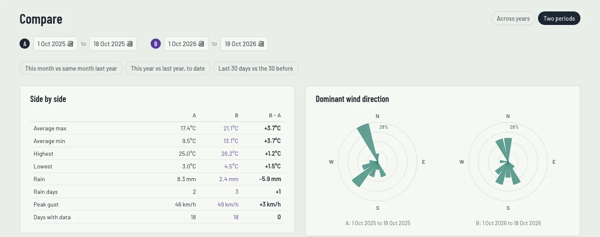
Insights Screen
The interesting bits, found for you: odd days, records, how the rain falls, dry spells, storms, and your station's climate.
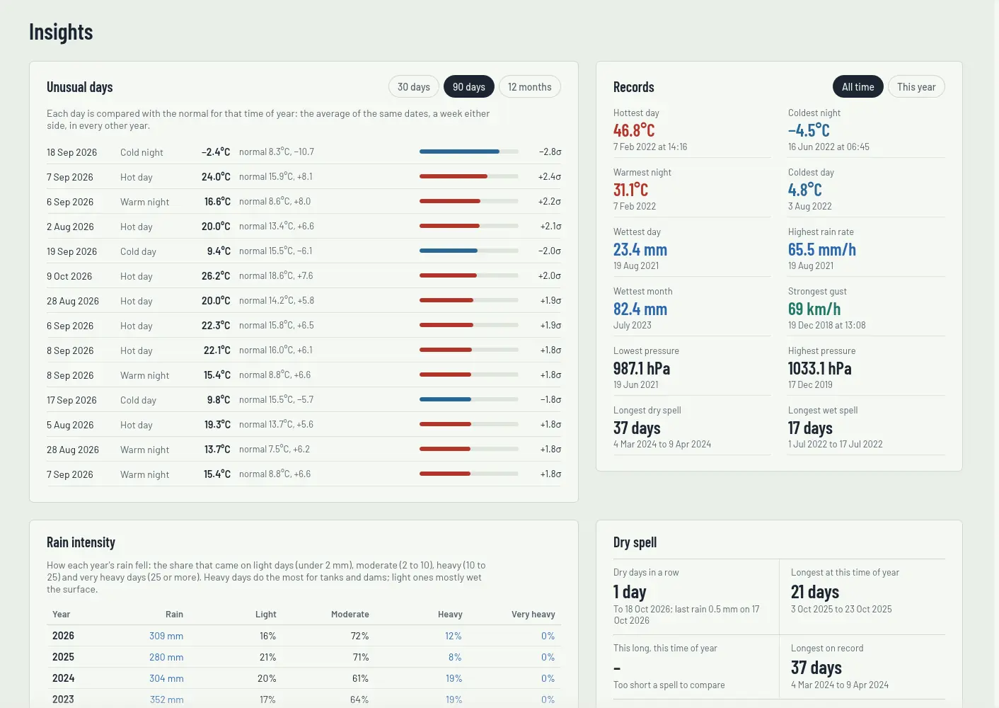
Unusual days
Days in the last 30 days, 90 days or 12 months whose maximum or minimum was well away from normal for that date: a hot day, cold day, warm night or cold night. Each row shows the reading, the normal, and a bar of how unusual it was, in standard deviations.
"Normal" here is the average of the same dates, a week either side, across all your other years. A 30° day is ordinary in January and remarkable in July (southern hemisphere); comparing against one average for the whole year would flag every summer day. A day is listed when it's at least 1.5 standard deviations from normal, which is roughly the most unusual 13% of days. It needs two years of history to know what normal looks like.
Records
All time, or this year: hottest and coldest days, warmest and coldest nights, wettest day and month, highest rain rate, strongest gust, lowest and highest pressure, and the longest dry and wet spells, each with when it happened.
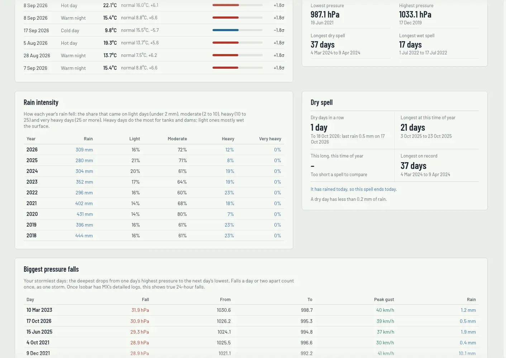
Rain intensity
How each year's rain fell. Days are sorted by their total: light (under 2 mm), moderate (2 to 10), heavy (10 to 25) and very heavy (25 mm or more). The table gives the share of the year's rain that came on each kind of day, plus the wettest hours on record.
Once Isobar has MX's detailed logs, a second table, By how hard it fell, splits the rain by its actual rate between readings: light under 2.5 mm an hour, moderate up to 10, heavy up to 50, and violent beyond. Rain logged across a gap of over an hour can't be timed, so it's left out.
Fifty millimetres in a month can mean twenty-five drizzly days that barely wet the garden, or one downpour that fills the tanks and overflows them. The totals look the same; the effect doesn't.
Dry spell
How many dry days in a row up to the last day on record, and the last rain. Then context: the longest dry spell at this time of year, the longest on record, and how many years had a spell at least this long within a fortnight of now. A dry day has less than 0.2 mm, which is one tip of a typical gauge.
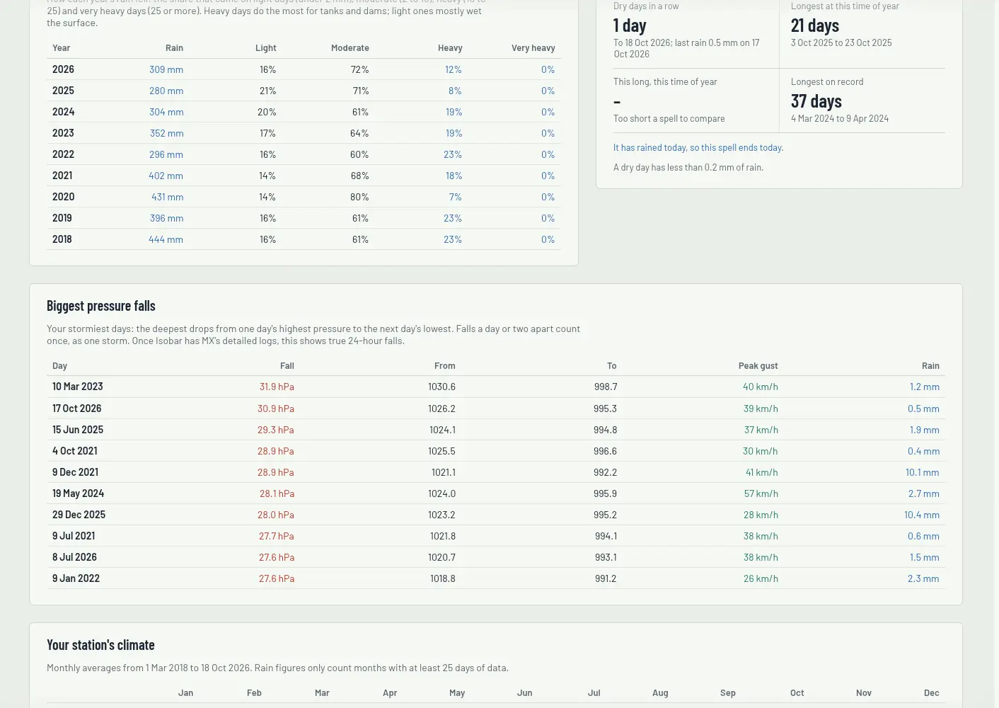
Biggest pressure falls
Your stormiest days, ranked by how far the pressure dropped. Each row has the date, the fall, the pressures it went from and to, and that day's peak gust and rain. Falls within two days of a bigger one count once, so one big storm doesn't fill the whole list.
From the dayfile alone, a fall is one day's highest pressure to the next day's lowest. Once MX's detailed logs are in, it becomes the true deepest fall within any 24 hours, with the time of the low.
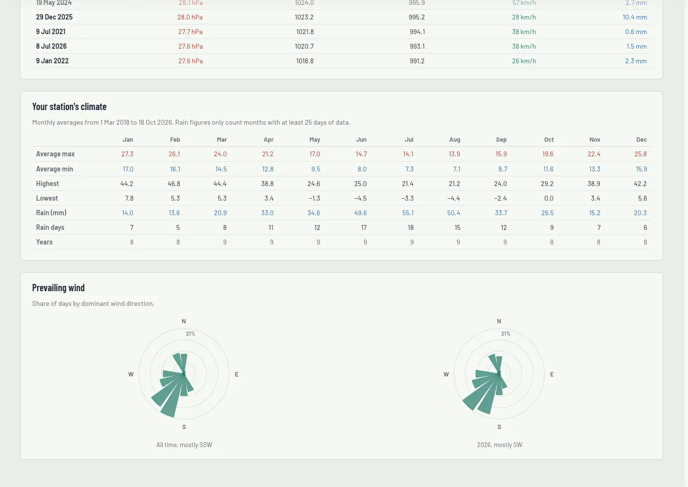
Your station's climate
A month-by-month table: average max and min, highest, lowest, rain, rain days, and how many years each figure comes from. Rain only counts months with at least 25 days of data, so a month with a dead gauge doesn't drag the average down.
Prevailing wind
Wind roses showing the share of days by the day's dominant wind direction. By year gives all time and this year side by side; By season gives four roses, summer first, named for your hemisphere, across every year on record. Seasonal roses are where the interesting stuff hides: the wind that brings your winter rain is rarely the one that brings summer's hot days.
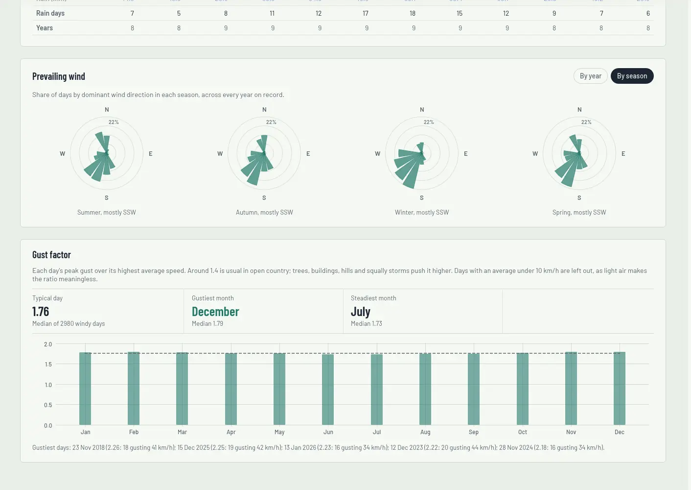
Gust factor
Each day's peak gust divided by its highest average speed. It says how lumpy the wind is: around 1.4 is usual in open country, and trees, buildings, hills and squally storms push it higher. The panel gives the typical day (the median), the gustiest and steadiest months, a bar for each month and the five gustiest days on record. Days whose highest average stayed under about 10 km/h are left out: in light air a gust of 6 against an average of 2 is a factor of 3 and means nothing.
Wind loads on roofs, fences and tall plants come from the gusts, not the average. A site with a high gust factor gets more damage from a given wind than the forecast speed suggests. If yours creeps up over the years, the trees are probably growing.
Seasons Screen
The rhythm of the year: water, frost, warmth and sun. Mostly for gardeners, farmers and people who like knowing when to plant the tomatoes.
Seasons follow your hemisphere, worked out from your latitude: spring is September to November in the south and March to May in the north.
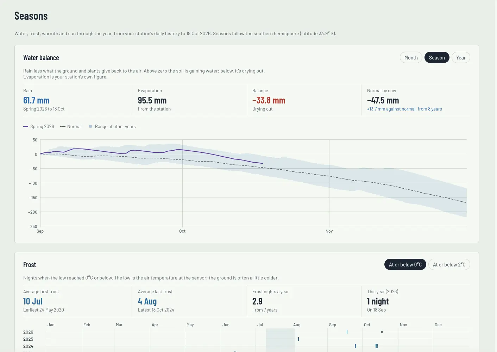
Water balance
Rain less evaporation, as a running total for this month, season or year. Above zero the soil is gaining water; below, it's drying out. The dashed line is normal for this point, the shaded band the range of other years.
Evaporation (strictly, evapotranspiration: what the ground and plants give back to the air) comes from your station if it records it. If not, Isobar estimates it from each day's high and low temperatures with the Hargreaves method, which needs your latitude. Either way the panel says which.
Frost
Nights when the low reached 0° or below; switch to 2° to include nights that frost the grass. You get the average first and last frost with the earliest and latest on record, frost nights a year, this year so far, and a calendar with a tick for every frost night on record. The shaded block is the average frost season.
The low is the air temperature at your sensor, usually about 1.2 m up. The ground is often a little colder, so you can get frost on the lawn on a night that reads 2°.
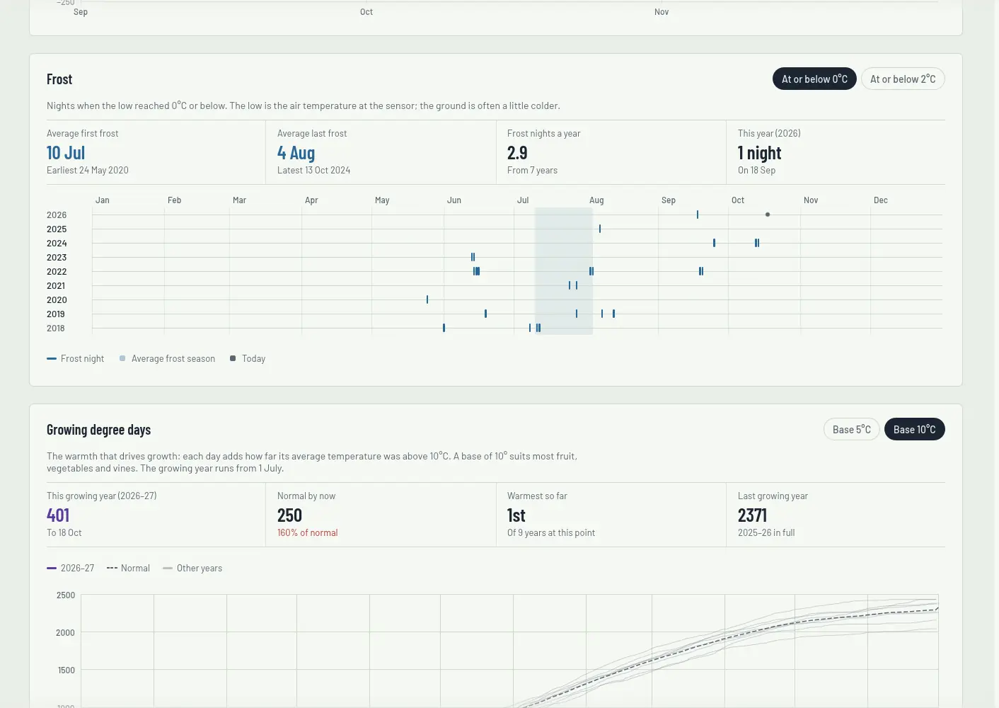
Growing degree days
The warmth that drives growth. Each day adds how far its average temperature was above a base: 10° suits most fruit, vegetables and vines, and 5° suits grass, cereals and cool-season crops. The growing year runs from 1 July in the south (1 January in the north). The chart shows this year's running total against every other year, with the normal, the warmest so far, and last year.
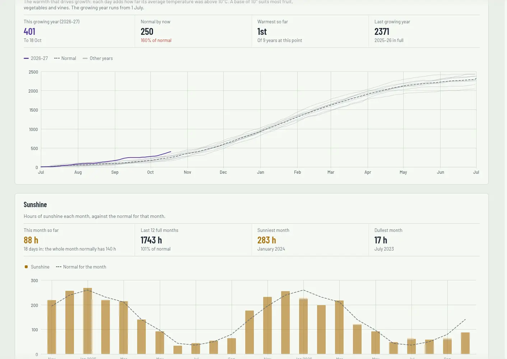
Sunshine
Hours of sunshine each month against the normal for that month: this month so far, the last 12 full months, the sunniest and dullest months on record, and a table by calendar month. Cumulus MX works sunshine out from a solar radiation sensor; no sensor, no panel. Months need at least 25 days of records to count.
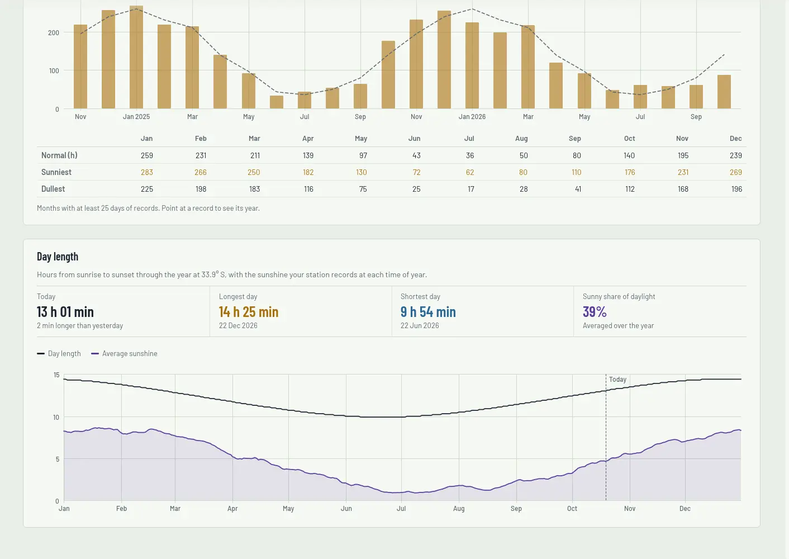
Day length
Hours from sunrise to sunset through the year at your latitude, with the longest and shortest days and today's change from yesterday. Average sunshine sits against it, which gives the sunny share of daylight: how much of the time the sun's up, it's actually out.
Set it in Settings → Station (south is negative: −33.9 or 33.9 S). Leave it empty and Isobar works it out from the day's sunrise and sunset, which is surprisingly accurate except near the equinoxes, when everywhere gets about twelve hours.
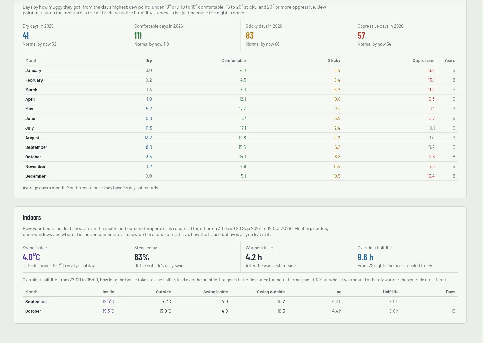
Comfort
Days sorted by how muggy they got, from the day's highest dew point: under 10° dry, 10 to 16° comfortable, 16 to 20° sticky, and 20° or more oppressive (50, 61 and 68° on a Fahrenheit station). The top row counts this year's days in each band against the normal by this date; the table gives the average days a month in each band.
Humidity goes up every night simply because the air cools, so "90% humidity" at dawn says very little. Dew point is the amount of water actually in the air, and it's what your skin notices. A 30° day with a dew point of 8 is dry heat; a 26° day with a dew point of 22 is the one where nobody sleeps.
Indoors
How your house holds its heat, from inside and outside temperatures recorded together. It uses MX's detailed logs (so years of it) once they're in, and Isobar's own readings until then. It needs an indoor sensor, which most console stations have.
- Swing inside: how far the inside temperature moves on a typical day, against the outside's swing.
- Steadied by: how much of the outside's daily swing the house soaks up. 70% means the outside swings ten degrees and the inside three.
- Warmest inside: how many hours after the warmest outside the inside peaks. Heavy brick and concrete lag more than weatherboard.
- Overnight half-life: from 22:00 to 05:00, how long the house takes to lose half its lead over the outside. Longer means better insulation or more thermal mass. Nights when the heater ran, or the house was barely warmer than outside, are left out.
The table gives each figure by calendar month, so you can see the winter half-life against the summer one, for instance.
Heating, cooling, open windows, the oven and where the indoor sensor sits all show up in these numbers. A console on a sunny windowsill will tell some tall tales. For the fairest half-life, look at months when you don't run the heater overnight.
Tanks Screen
For houses that drink the rain. How full the tanks are, how long the water lasts, and how much the roof catches and wastes.
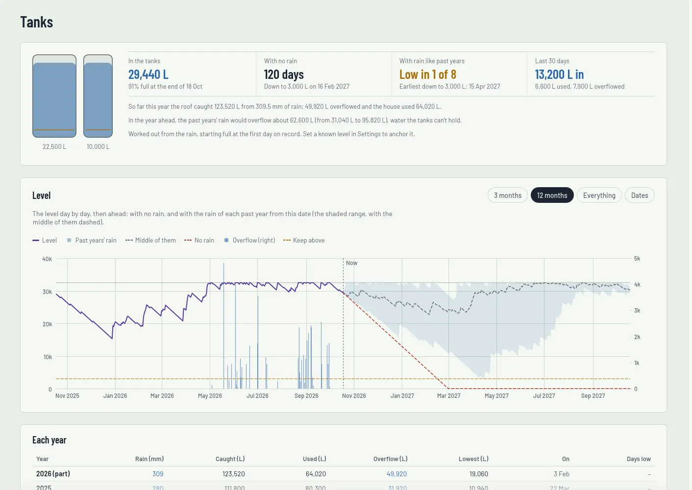
The headline figures
- In the tanks: litres now and how full.
- With no rain: how many days until the level reaches your keep-above level, and the date.
- With rain like past years: replays the rain of every past year from today's date. "Low in 1 of 8" means one of eight past years' weather would take you below keep-above within a year.
- Last 30 days: litres in, used and overflowed.
Below them, a few sentences: what the roof caught this year, what overflowed, what the house used, and what the year ahead would likely spill.
The level chart
The level day by day, then a year ahead: straight down with no rain (red dashes), and the range of what each past year's rain would do (shaded, the middle one dashed). Overflow shows as bars on the right-hand scale. Choose 3 months, 12 months, everything, or your own dates; an end date after today adds the outlook up to that date.
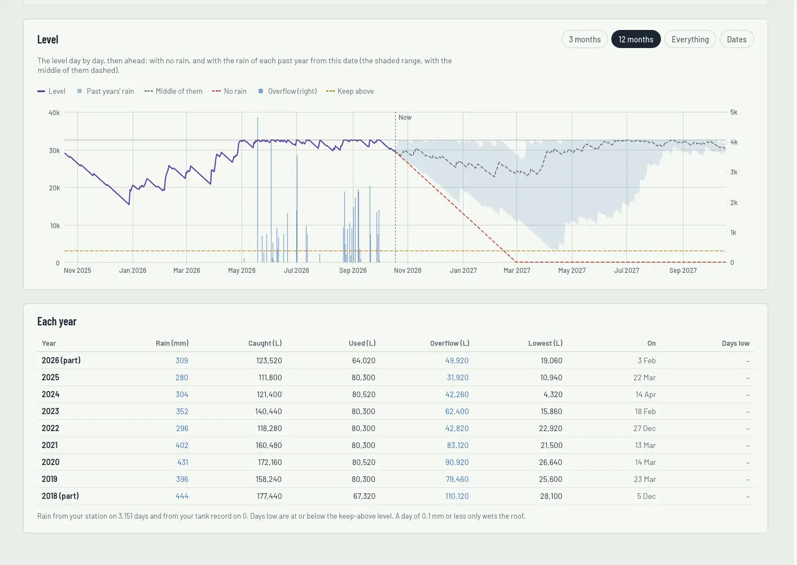
Each year
Rain, litres caught, used and overflowed, the lowest level and when, and how many days were at or below keep-above.
How the model works
Every day: yesterday's level + rain × roof area − daily use + any adjustment, never more than the tanks hold (the rest is overflow) and never below empty. One millimetre on one square metre is one litre, so a 385 m² roof catches 385 L per mm. Days with 0.1 mm or less catch nothing: that much just wets the roof.
Roof maths
Without a starting point, Isobar assumes the tanks were full on the first day on record and works forward. That's a guess, so give it a known level in Settings: "full" on a day they overflowed, a number of litres, or a depth you measured with a stick (like "1350 mm", which needs the tank diameters). From then on the model starts from what you told it.
Importing a tank spreadsheet
If you've kept a spreadsheet (Excel, LibreOffice or CSV), Settings → Rainwater tanks → Import a tank record reads it. It needs a Date column and an mm column; Use (litres that day) and Adjust (litres added or taken out, such as a water delivery) are optional. Isobar finds the header row itself.
- Its rain fills in days before your station's history began. Where both have a day, the station wins.
- Its use and adjustments replace the usual daily figure on those days.
- Blank rain rows count as dry, up to the last row with rain in it.
If the import says it can't open the file, it's probably still open in Excel, which locks it. Close it there and try again.
Reports Screen
Paperwork, but the good kind: climate summaries and a month in review, to keep, print or send to the neighbour who insists their gauge got more.
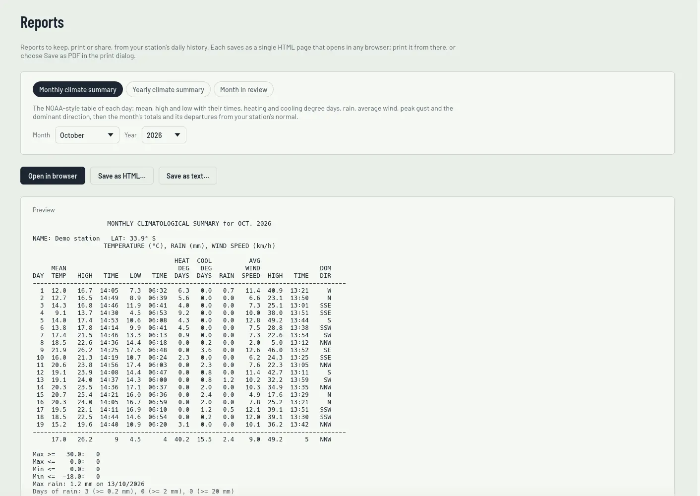
Pick a report, then the month and year. Then:
- Open in browser writes the report as a web page and opens it. From there, print it, or choose Save as PDF in the print dialog. The pages have print styles for A4.
- Save as HTML… puts the page wherever you like. It's one self-contained file: the charts are drawn inside it, so it opens anywhere, offline, years from now.
- Save as text… (the two climate summaries) gives the classic fixed-width layout, as Cumulus writes its own NOAA reports, for pasting into a forum post or your website.
Monthly climate summary
The NOAA-style table, a line a day: mean temperature, high and low with their times, heating and cooling degree days, rain, average wind speed, peak gust with its time, and the dominant direction. Under it are the month's totals, then counts of days against the usual thresholds:
- highs of 30° or more, and highs at or below 0°
- lows at or below 0°, and at or below −18°
- days of rain of 0.2, 2 and 20 mm or more
On a Fahrenheit or inch station the thresholds are 90°, 32°, 0° and 0.01, 0.1, 1 in. Last come the month's departures from your station's own normal.
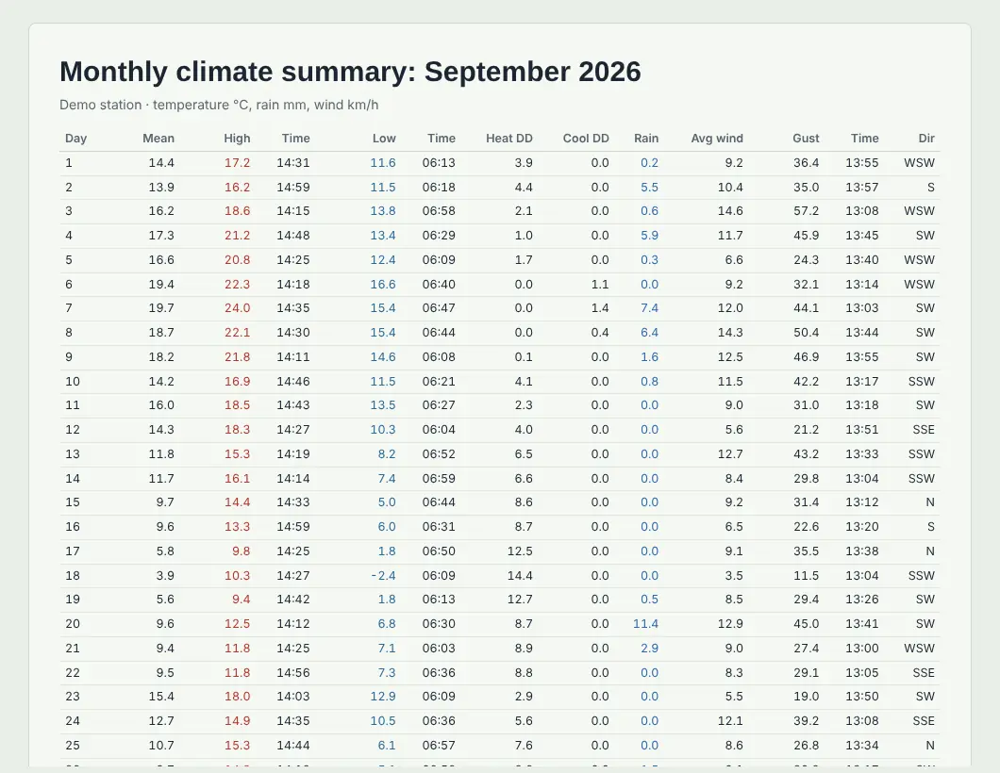
Yearly climate summary
A line a month in three tables:
- Temperature: mean max, min and mean, the departure from normal, degree days, the extremes with their dates, and the day counts.
- Rain: the total, its departure from normal, the wettest day, and the days of rain.
- Wind: the average, the peak gust and the dominant direction.
The year's totals sit at the bottom of each table.
Month in review
One page for the month, made for the fridge door or the family group chat:
- the headline figures against normal
- a temperature chart against each date's normal, and rain against its normal running total
- the month's wind rose
- any station records it set for that month, and the notable days
- a day-by-day table
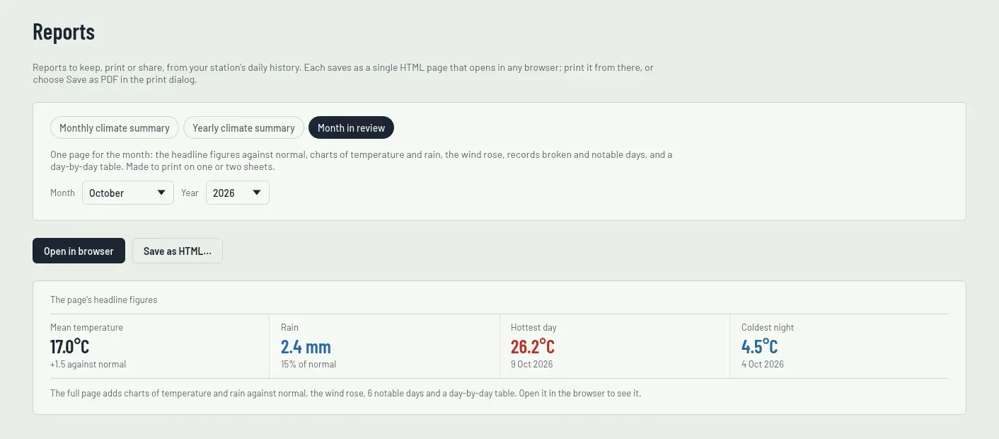
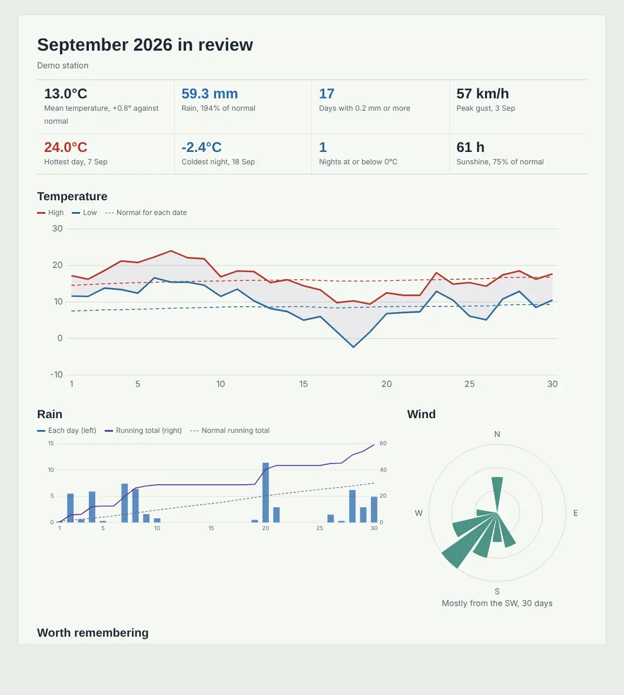
Every comparison is with your own station's other years, not a bureau station 30 km away with a different hill in the way. The current month works too: it says "so far", and its normals are scaled to the days it has.
Health Screen
Is it the weather, or is it the station? The page that saves you a walk out to the mast in your dressing-gown.
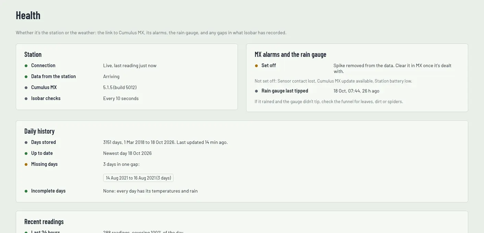
Each line has a coloured dot: green is fine, amber wants a look, red is a problem, grey is just information.
Station
- Connection: live with the time of the last reading, or what went wrong and since when.
- Data from the station: MX's own "data stopped" flag. "Stopped" means MX is running but isn't hearing from the station: check its console, cable or radio link.
- Cumulus MX: the version and build MX reports.
- Isobar checks: how often it polls.
MX alarms and the rain gauge
Any MX alarms that have gone off (sensor contact lost, battery low, spike removed and so on), with what to do about them, then the ones that haven't. Rain gauge last tipped says when the bucket last moved. If it rained and the gauge didn't tip, check the funnel for leaves, dirt or spiders. Spiders love a rain gauge.
Daily history
Days stored and the range, whether the newest day is up to date, missing days (gaps in the dayfile, as date ranges) and incomplete days (days without temperatures or rain). Download history again fetches everything from MX afresh. Gaps that are also in MX's own dayfile will stay; MX can only send what it recorded.
Recent readings and detailed history
- Last 24 hours: how many readings Isobar has and how much of the day they cover.
- Gap filling: when Isobar last fetched MX's recent detail to fill a gap, and how many readings it brought.
- Detailed history: progress fetching MX's log files ("12 of 87 months, 52,000 readings so far"), the range stored, or why it couldn't fetch them. After an error it tries again in half an hour.
Settings Screen
Changes only stick when you press Save settings at the bottom. Isobar shows "Unsaved changes" until you do.
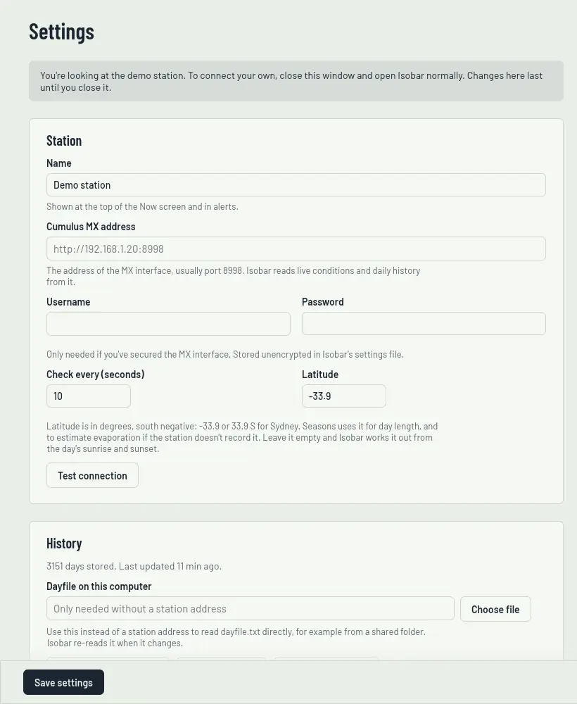
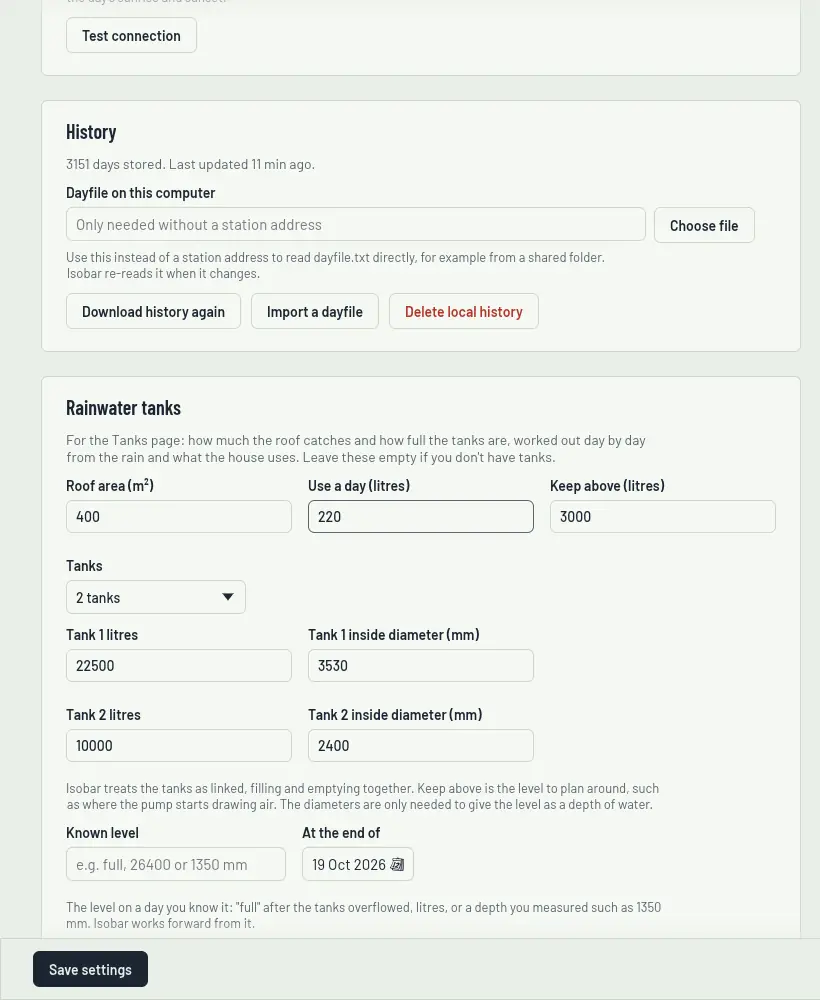
Station
| Name | Shown at the top of Now and in alerts. |
| Cumulus MX address | The MX interface, usually port 8998. 192.168.1.20:8998 works too; Isobar adds the http://. |
| Username, password | Only if you've secured the MX interface. Stored unencrypted in the settings file. |
| Check every | Seconds between live readings. 10 is plenty; MX itself updates about that often. |
| Latitude | Degrees, south negative. Used for day length and the evaporation estimate. Empty means "work it out from sunrise and sunset". |
| Test connection | Asks MX for a reading without saving anything. |
History
| Dayfile on this computer | Read a dayfile.txt directly instead of from MX. Only for setups without the MX interface. |
| Download history again | Refetches the whole dayfile from MX. Handy after you've fixed something in MX's data. |
| Import a dayfile | Merges an archive dayfile, such as one from an earlier station location, into the history. |
| Delete local history | Clears Isobar's copy of the daily history. Your station's files aren't touched, and it all downloads again. |
Rainwater tanks
Roof area, daily use, keep-above level, how many tanks (one to four) with each one's litres and, optionally, inside diameter. The tanks are treated as linked, filling and emptying together. Keep above is the level you plan around, such as where the pump starts sucking air. Then the known level and its date, and the tank record import. The boxes show greyed examples ("e.g. 385") until you type; those aren't values.
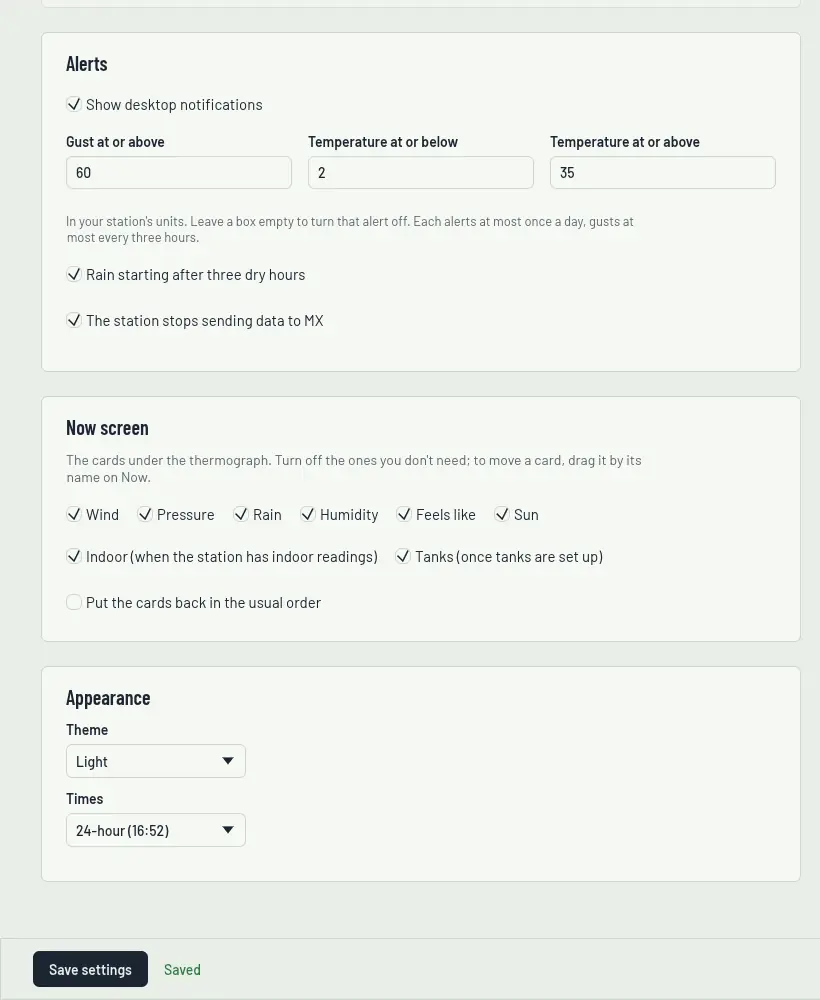
Alerts, Now screen, Appearance
- Alerts: see Alerts.
- Now screen: tick the cards you want. "Put the cards back in the usual order" undoes your dragging.
- Appearance: theme (Match system, Light, Dark) and times (24-hour 16:52, or 12-hour 4:52 PM).
Alerts
Desktop notifications for weather worth knowing about, while Isobar is running:
| Alert | When | How often |
|---|---|---|
| Gust | A gust at or above your limit | At most every three hours |
| Frost | Temperature at or below your limit | Once a day |
| Heat | Temperature at or above your limit | Once a day |
| Rain starting | Rain after three dry hours | Each time it starts again |
| Station stopped | MX says the station has stopped sending it data | Once, and again only after it has started again |
Limits are in your station's units. Leave a box empty to turn that alert off, or untick Show desktop notifications to silence the lot.
Where the data comes from
Everything comes from Cumulus MX's own web interface, the same one its dashboard uses. Isobar only ever reads.
| What | From MX | How often |
|---|---|---|
| Live readings | /api/data/currentdata | Every 10 s (Check every) |
| Daily history | /api/data/dayfile, in pages | Checked every 30 minutes; fetched again when the line count changes |
| Recent detail | /api/graphdata/*.json (72 hours, a reading a minute) | At startup, and after any gap over 15 minutes |
| Detailed history | /api/data/logfile, a month at a time | Back to the start of your history, newest first; the current month every 10 minutes |
On top of that, Isobar keeps one live reading a minute itself, so the 24-hour charts work even if MX's graph data isn't available.
Units come from your station: whatever MX reports (°C or °F, mm or in, km/h, m/s, mph or knots, hPa or inHg) is what Isobar shows. Charts assume the history is in the same units.
Where Isobar keeps things
Two files, both in a folder called app.isobar.desktop:
| File | Windows | Linux |
|---|---|---|
settings.json | %APPDATA%\app.isobar.desktop\ | ~/.config/app.isobar.desktop/ |
isobar.sqlite | %APPDATA%\app.isobar.desktop\ | ~/.local/share/app.isobar.desktop/ |
On Windows, %APPDATA% is usually C:\Users\you\AppData\Roaming. Paste %APPDATA%\app.isobar.desktop into Explorer's address bar to go straight there.
settings.json
A few kilobytes: station address and login, latitude, tank setup and known level, card order, alerts, theme. The MX password, if you set one, is in here as plain text.
isobar.sqlite
A SQLite database, which is Isobar's local copy of everything:
| Table | Holds | Rebuilt from MX? |
|---|---|---|
days | One row per day from the dayfile | Yes, in seconds |
log | MX's detailed logs, at most one reading per 10 minutes | Yes, over a while |
samples | Isobar's own reading a minute, the last 21 days | Mostly (MX keeps 72 hours of graph data) |
tank_log | Your imported tank spreadsheet | No: import the spreadsheet again |
meta | Bookkeeping, such as which log months are fetched | Yes |
Size: the detailed logs are the big part, about 3 MB a year. If your MX logs every minute, Isobar combines each 10 minutes into one reading as it arrives (averages, with the highest gust and rain rate and the latest rain totals), which is a tenth of the size and loses nothing the charts or Insights use. A database from before 19 October 2026 is thinned this way once, the first time a newer Isobar starts.
Reports
Open in browser keeps its copy of each report in a reports folder beside isobar.sqlite, overwriting the same report each time you open it. They're throwaway: save one with Save as HTML… to keep it somewhere you'll find it. The demo station uses your system's temporary folder instead.
While Isobar runs you may also see isobar.sqlite-wal and isobar.sqlite-shm beside it. They're SQLite's working files and part of the database; leave them be.
Backups and a second computer
What to back up
- Cumulus MX's own folder, especially
data(the dayfile and monthly logs) andCumulus.ini. Everything Isobar knows comes from there. settings.json. It's small, and retyping tank diameters is nobody's idea of fun.- Your tank spreadsheet, if you imported one.
isobar.sqlite is optional: it only saves the wait while Isobar fetches the history again. If you do copy it, close Isobar first, so the database and its working files are all in step.
Starting again on a new computer
Download Isobar, put settings.json in place (or just type the station address in), start it, and import the tank spreadsheet again if you use one. Daily history is back in seconds; the detailed history comes back in the background.
Two computers, one station
Run Isobar on both, each pointing at MX. MX is the shared dataset; each Isobar keeps its own small cache. Don't put isobar.sqlite on a network share and open it from two machines: SQLite expects to live on the machine using it, and over a network it can lock up or get damaged. Copy settings.json across instead.
The maths, explained
No black boxes. Here's how Isobar works out each figure, in plain words.
Normals
The normal for a date is the average of every other year's values from a week before to a week after that date. So normal for 15 October uses 8–22 October in every other year: about 15 days × (years − 1) values. The year being looked at is left out, so a day isn't compared with itself. Standard deviation comes from the same values and measures how much the weather usually varies at that time of year.
Unusual days
A day is unusual when its max or min is at least 1.5 standard deviations from that date's normal. If normal is 20° and the usual spread is 3°, a day of 24.5° or more (or 15.5° or less) makes the list.
Rain days, dry days and intensity
A rain day has at least 0.2 mm; anything less is a dry day. By the day's total: light under 2 mm, moderate 2 to 10, heavy 10 to 25, very heavy 25 or more. By rate, from the detailed logs: light under 2.5 mm an hour, moderate under 10, heavy under 50, violent beyond.
Pressure tendency
The change over the last three hours of recorded readings, in hPa, put into the words forecasters use. Until there are three hours of readings, Isobar uses MX's own hourly trend.
Try it
Steady under 0.1 hPa; slowly up to 1.5; plain rising or falling up to 3.5; quickly up to 6; very rapidly beyond. A fall of 3.6 hPa or more shows in amber on Now.
Pressure falls
With detailed logs: for every reading, the highest pressure in the 24 hours before it, minus that reading. The biggest of those are the falls, keeping only the biggest within any two days. With the dayfile only: each day's highest pressure minus the next day's lowest.
Dry spells
A run of consecutive dry days. "This time of year" compares with dry spells in other years that touched the dates within a fortnight of today.
Water balance and evaporation
Each day adds its rain and takes away its evapotranspiration, summed from the start of the month, season or year. If the station has no ET figure, Isobar uses the Hargreaves estimate: 0.0023 × extraterrestrial radiation × (mean temperature + 17.8) × √(max − min). The radiation depends on latitude and date, which is why Isobar needs your latitude.
Growing degree days
For each day, the average of the max and min, minus the base (10° or 5°), counted only when positive. A day of 24° and 12° adds 18 − 10 = 8 at base 10.
Frost dates
The frost year runs January to December in the south (July to June in the north), so a winter isn't split in two. First and last frost are the first and last nights at or below the threshold in each frost year, averaged by day of year across years that had any.
Sunshine and day length
Monthly sunshine totals count months with at least 25 days of records. Day length comes from the sun's declination and your latitude. The latitude estimate runs that the other way round, from the day's sunrise and sunset.
Cloudiness gauge
Solar radiation now divided by MX's clear-sky maximum for this moment. Clear at 85% or more, hazy 60%, cloudy 30%, overcast below.
Tank outlook
The model runs forward a year from today's level, once with no rain and once for each past year's rain on the same calendar dates. The shaded band is the spread of those runs; "Low in 1 of 8" counts the runs that went below keep-above.
Comfort bands
Each day goes into one band by its highest dew point: below 10° dry, 10 to 16° comfortable, 16 to 20° sticky, 20° and up oppressive. Normal for a month is the average count in months with at least 25 days of dew points, leaving out the current month. "Normal by now" adds up the months so far this year and a share of the current one.
Gust factor
The day's peak gust divided by its highest average speed (MX's highest 10-minute average), for days whose highest average reached about 10 km/h (3 m/s, 6 mph, 5 knots). The typical day and each month's bar are medians, so one wild afternoon doesn't skew them.
Indoors
Inside readings are paired with the outside reading nearest in time (within 15 minutes). A day counts when it has pairs in at least 20 of its hours. The swing is the day's highest less its lowest; the lag is the hours from the outside's warmest reading to the inside's, where that's under 12 hours. The overnight half-life treats the cooling as exponential (Newton's law of cooling): with the inside's lead over the night's average outside temperature d₀ at 22:00 and d₁ at 05:00, over t hours, half-life = t × ln 2 ÷ ln(d₀ ÷ d₁). Nights count only when the house started at least 2° warmer than outside and lost at least 5% of its lead. Monthly figures are medians.
Climate summaries
- A day's mean is the dayfile's average temperature, or the mean of its high and low.
- Degree days come from the dayfile when Cumulus records them (at its own base). Otherwise Isobar works them out from each day's mean against 18.3°C (65°F), the usual NOAA base. The report says which.
- Average wind speed is the day's wind run divided by 24 hours.
- The dominant direction for a month or year is the most common of the days' dominant directions.
- Departures are from the station's other years: the mean temperature of the same month in all of them, and the average rain of those with 25 or more days.
Ten-minute storage
Detailed log readings are grouped into 10-minute steps on the clock. Within a step, readings are averaged, except gust and rain rate (the highest is kept) and bearing and the rain totals (the latest is kept). The step is timed at its last reading.
Troubleshooting
Now says "Can't reach your station"
Check the address in Settings is the MX interface (port 8998 by default), that MX is running, and that the computer running it hasn't gone to sleep. Open the same address in a browser on the same computer as Isobar; if the MX dashboard doesn't load there either, it's the network or MX, not Isobar.
A reading on Now shows "–"
Your station or MX version doesn't send that field. Isobar has been checked against MX 5.1.5. If something's missing that you know your station measures, the MX output at /api/data/currentdata shows what it actually sends.
Tank settings don't seem to save
- Press Save settings at the very bottom. A note in the tanks panel says when the details aren't saved yet.
- Greyed "e.g." text in a box is an example, not a value. Type the number.
- Every tank needs its litres, and a depth as the known level needs every tank's diameter.
The 24-hour chart has a gap
Nothing was recorded for over 20 minutes. Isobar fills gaps from MX's recent detail when it can; Health → Gap filling says whether MX sent any. MX keeps 72 hours of that, so a gap older than three days stays unless the detailed logs cover it.
Health lists missing days
Those dates aren't in the dayfile. Try Download history again. If they're still missing, they're missing in MX too (the station was off, or MX wasn't running). MX can only send what it recorded.
The detailed history is taking ages
Each month is a separate request, and years of one-minute logs are a lot of lines. It runs in the background and resumes where it left off after a restart. If it shows an error, Isobar tries again in half an hour.
Windows quarantined Isobar
See Windows being suspicious. Check the checksum, then restore the file from Defender's Protection history and allow it.
Open in browser doesn't open anything
Isobar asks the system to open the page with your usual browser. If that fails, it says where the file is saved: open it from there, or use Save as HTML… and double-click the saved file.
The Feels like card or cloud base is missing
The Feels like card appears when MX sends a feels-like or apparent temperature, and cloud base when it sends Cloudbase. MX 5 sends both. Older versions may not.
Indoors doesn't show on Seasons
It needs indoor and outdoor temperatures recorded together for at least one full day, from MX's detailed logs or Isobar's own readings, and a station with an indoor sensor. Give it a day, or wait for the detailed history (Health shows its progress).
I want to start completely fresh
Close Isobar and delete the app.isobar.desktop folder (or folders, on Linux). Isobar starts as if new. Your Cumulus data isn't touched.
What's coming
The roadmap lives in docs/ROADMAP.md in the repository, with a printable checklist for deciding what gets built. Still on the table, among others: more reports (a yearly almanac, saving straight to PDF, CSV export), units of your choice, heating and cooling degree days by month, wind run and Beaufort force, a warming-trend chart, more colour themes, and a readout in the system tray.
About this guide
It lives alongside the code, in docs/guide/, and is updated whenever Isobar changes, screenshots included. If something here doesn't match what you see, the guide is wrong; please say so.
| Date | Change |
|---|---|
| 20 Oct 2026 | The Reports screen; the Feels like card, dew point range and cloud base on Now; the stopped-station warning and alert; wind roses by season and the gust factor on Insights; comfort days and Indoors on Seasons. New screenshots of Now. |
| 19 Oct 2026 | First edition, for Isobar 0.3.0: every screen, the data and storage, backups, and the maths behind each figure. Also attached to each release as isobar-user-guide.zip. |
Nothing in the guide matches that. Try a shorter word, like “rain” or “tank”.